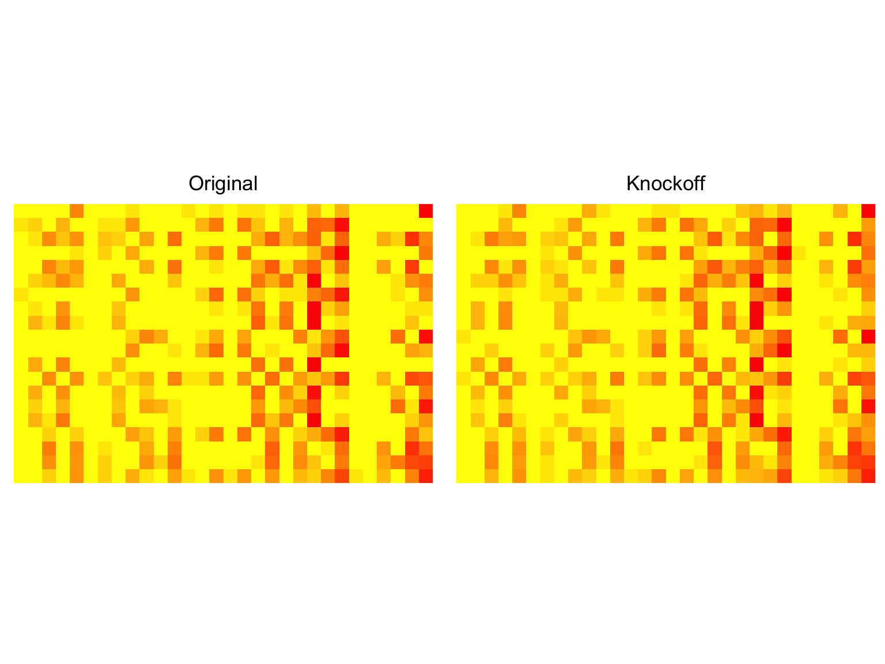

Last updated: 2024-06-18
Checks: 6 1
Knit directory: zinck-website/
This reproducible R Markdown analysis was created with workflowr (version 1.7.1). The Checks tab describes the reproducibility checks that were applied when the results were created. The Past versions tab lists the development history.
The R Markdown is untracked by Git. To know which version of the R
Markdown file created these results, you’ll want to first commit it to
the Git repo. If you’re still working on the analysis, you can ignore
this warning. When you’re finished, you can run
wflow_publish to commit the R Markdown file and build the
HTML.
Great job! The global environment was empty. Objects defined in the global environment can affect the analysis in your R Markdown file in unknown ways. For reproduciblity it’s best to always run the code in an empty environment.
The command set.seed(20240617) was run prior to running
the code in the R Markdown file. Setting a seed ensures that any results
that rely on randomness, e.g. subsampling or permutations, are
reproducible.
Great job! Recording the operating system, R version, and package versions is critical for reproducibility.
Nice! There were no cached chunks for this analysis, so you can be confident that you successfully produced the results during this run.
Great job! Using relative paths to the files within your workflowr project makes it easier to run your code on other machines.
Great! You are using Git for version control. Tracking code development and connecting the code version to the results is critical for reproducibility.
The results in this page were generated with repository version 6e66a4e. See the Past versions tab to see a history of the changes made to the R Markdown and HTML files.
Note that you need to be careful to ensure that all relevant files for
the analysis have been committed to Git prior to generating the results
(you can use wflow_publish or
wflow_git_commit). workflowr only checks the R Markdown
file, but you know if there are other scripts or data files that it
depends on. Below is the status of the Git repository when the results
were generated:
Untracked files:
Untracked: analysis/CRC.Rmd
Untracked: analysis/Heatmaps.Rmd
Untracked: analysis/IBD.Rmd
Untracked: analysis/simulation.Rmd
Unstaged changes:
Modified: analysis/index.Rmd
Note that any generated files, e.g. HTML, png, CSS, etc., are not included in this status report because it is ok for generated content to have uncommitted changes.
There are no past versions. Publish this analysis with
wflow_publish() to start tracking its development.
We demonstrate the ability of zinck to capture the compositional and highly sparse nature of microbiome count data by comparing the heatmaps of the original sample taxa matrix \(\mathbf{X}\) with its high quality knockoff copy, \(\tilde{\mathbf{X}}\).
We consider a toy setting with \(20\) samples and \(30\) taxa with the library size between
\(400\) and \(500\) for each sample, for a high
zero-inflation level of \(0.8\). We use
the simulateZINLDA() function from the zinLDA
package to generate the original sample taxa matrix.
library(zinck)
library(zinLDA)
library(ggplot2)
library(reshape2)
library(gridExtra)
library(cowplot)
set.seed(1)
N.d=zinLDA::rdu(n=20,min=400,max=500) # Drawing random library sizes between 400, 500
sim_data = zinLDA::simulateZINLDA(D=20,V=30,N=N.d,K=5,Alpha=0.1,Pi=0.8,a=0.5,b=10)
X_original <- sim_data$sampleTaxaMatrix ## The original sample taxa count matrix
model_zinck <- fit.zinck(X_original, num_clusters=5, method="Gibbs", seed=1)
| | 0 % elapsed=00s
|= | 0 % elapsed=01s, remaining~08m 50s
|= | 0 % elapsed=01s, remaining~04m 56s
|= | 1 % elapsed=01s, remaining~03m 40s
|= | 1 % elapsed=01s, remaining~02m 59s
|= | 1 % elapsed=02s, remaining~02m 36s
|= | 1 % elapsed=02s, remaining~02m 22s
|== | 1 % elapsed=02s, remaining~02m 12s
|== | 2 % elapsed=02s, remaining~02m 04s
|== | 2 % elapsed=02s, remaining~01m 58s
|== | 2 % elapsed=02s, remaining~01m 58s
|== | 2 % elapsed=03s, remaining~01m 54s
|== | 2 % elapsed=03s, remaining~01m 50s
|=== | 3 % elapsed=03s, remaining~01m 47s
|=== | 3 % elapsed=03s, remaining~01m 44s
|=== | 3 % elapsed=03s, remaining~01m 41s
|=== | 3 % elapsed=03s, remaining~01m 39s
|=== | 3 % elapsed=03s, remaining~01m 37s
|=== | 4 % elapsed=04s, remaining~01m 35s
|==== | 4 % elapsed=04s, remaining~01m 33s
|==== | 4 % elapsed=04s, remaining~01m 32s
|==== | 4 % elapsed=04s, remaining~01m 30s
|==== | 4 % elapsed=04s, remaining~01m 29s
|==== | 5 % elapsed=04s, remaining~01m 28s
|==== | 5 % elapsed=04s, remaining~01m 26s
|==== | 5 % elapsed=04s, remaining~01m 25s
|===== | 5 % elapsed=05s, remaining~01m 24s
|===== | 5 % elapsed=05s, remaining~01m 24s
|===== | 6 % elapsed=05s, remaining~01m 23s
|===== | 6 % elapsed=05s, remaining~01m 22s
|===== | 6 % elapsed=05s, remaining~01m 22s
|===== | 6 % elapsed=05s, remaining~01m 21s
|====== | 6 % elapsed=05s, remaining~01m 20s
|====== | 7 % elapsed=06s, remaining~01m 20s
|====== | 7 % elapsed=06s, remaining~01m 19s
|====== | 7 % elapsed=06s, remaining~01m 18s
|====== | 7 % elapsed=06s, remaining~01m 18s
|====== | 7 % elapsed=06s, remaining~01m 17s
|======= | 8 % elapsed=06s, remaining~01m 17s
|======= | 8 % elapsed=06s, remaining~01m 16s
|======= | 8 % elapsed=07s, remaining~01m 16s
|======= | 8 % elapsed=07s, remaining~01m 15s
|======= | 8 % elapsed=07s, remaining~01m 15s
|======= | 9 % elapsed=07s, remaining~01m 14s
|======== | 9 % elapsed=07s, remaining~01m 14s
|======== | 9 % elapsed=07s, remaining~01m 14s
|======== | 9 % elapsed=07s, remaining~01m 13s
|======== | 9 % elapsed=08s, remaining~01m 13s
|======== | 10% elapsed=08s, remaining~01m 13s
|======== | 10% elapsed=08s, remaining~01m 12s
|======== | 10% elapsed=08s, remaining~01m 12s
|========= | 10% elapsed=08s, remaining~01m 12s
|========= | 10% elapsed=08s, remaining~01m 11s
|========= | 11% elapsed=08s, remaining~01m 11s
|========= | 11% elapsed=09s, remaining~01m 11s
|========= | 11% elapsed=09s, remaining~01m 10s
|========= | 11% elapsed=09s, remaining~01m 10s
|========== | 11% elapsed=09s, remaining~01m 09s
|========== | 12% elapsed=09s, remaining~01m 09s
|========== | 12% elapsed=09s, remaining~01m 09s
|========== | 12% elapsed=09s, remaining~01m 08s
|========== | 12% elapsed=10s, remaining~01m 09s
|========== | 12% elapsed=10s, remaining~01m 09s
|=========== | 13% elapsed=10s, remaining~01m 08s
|=========== | 13% elapsed=10s, remaining~01m 08s
|=========== | 13% elapsed=10s, remaining~01m 08s
|=========== | 13% elapsed=10s, remaining~01m 08s
|=========== | 13% elapsed=10s, remaining~01m 07s
|=========== | 14% elapsed=11s, remaining~01m 07s
|============ | 14% elapsed=11s, remaining~01m 07s
|============ | 14% elapsed=11s, remaining~01m 07s
|============ | 14% elapsed=11s, remaining~01m 06s
|============ | 14% elapsed=11s, remaining~01m 06s
|============ | 15% elapsed=11s, remaining~01m 06s
|============ | 15% elapsed=11s, remaining~01m 06s
|============ | 15% elapsed=12s, remaining~01m 06s
|============= | 15% elapsed=12s, remaining~01m 05s
|============= | 15% elapsed=12s, remaining~01m 05s
|============= | 16% elapsed=12s, remaining~01m 05s
|============= | 16% elapsed=12s, remaining~01m 05s
|============= | 16% elapsed=12s, remaining~01m 04s
|============= | 16% elapsed=12s, remaining~01m 04s
|============== | 16% elapsed=13s, remaining~01m 04s
|============== | 17% elapsed=13s, remaining~01m 04s
|============== | 17% elapsed=13s, remaining~01m 04s
|============== | 17% elapsed=13s, remaining~01m 04s
|============== | 17% elapsed=13s, remaining~01m 04s
|============== | 17% elapsed=13s, remaining~01m 04s
|=============== | 18% elapsed=14s, remaining~01m 03s
|=============== | 18% elapsed=14s, remaining~01m 03s
|=============== | 18% elapsed=14s, remaining~01m 03s
|=============== | 18% elapsed=14s, remaining~01m 03s
|=============== | 18% elapsed=14s, remaining~01m 03s
|=============== | 19% elapsed=14s, remaining~01m 02s
|================ | 19% elapsed=14s, remaining~01m 02s
|================ | 19% elapsed=15s, remaining~01m 02s
|================ | 19% elapsed=15s, remaining~01m 02s
|================ | 19% elapsed=15s, remaining~01m 02s
|================ | 20% elapsed=15s, remaining~01m 02s
|================ | 20% elapsed=15s, remaining~01m 02s
|================ | 20% elapsed=15s, remaining~01m 01s
|================= | 20% elapsed=16s, remaining~01m 01s
|================= | 20% elapsed=16s, remaining~01m 01s
|================= | 21% elapsed=16s, remaining~01m 01s
|================= | 21% elapsed=16s, remaining~01m 01s
|================= | 21% elapsed=16s, remaining~01m 00s
|================= | 21% elapsed=16s, remaining~01m 00s
|================== | 21% elapsed=16s, remaining~01m 00s
|================== | 22% elapsed=17s, remaining~01m 00s
|================== | 22% elapsed=17s, remaining~01m 00s
|================== | 22% elapsed=17s, remaining~60s
|================== | 22% elapsed=17s, remaining~60s
|================== | 22% elapsed=17s, remaining~60s
|=================== | 23% elapsed=17s, remaining~59s
|=================== | 23% elapsed=17s, remaining~59s
|=================== | 23% elapsed=18s, remaining~59s
|=================== | 23% elapsed=18s, remaining~59s
|=================== | 23% elapsed=18s, remaining~59s
|=================== | 24% elapsed=18s, remaining~58s
|==================== | 24% elapsed=18s, remaining~58s
|==================== | 24% elapsed=18s, remaining~58s
|==================== | 24% elapsed=18s, remaining~58s
|==================== | 24% elapsed=19s, remaining~58s
|==================== | 25% elapsed=19s, remaining~58s
|==================== | 25% elapsed=19s, remaining~57s
|==================== | 25% elapsed=19s, remaining~57s
|===================== | 25% elapsed=19s, remaining~57s
|===================== | 25% elapsed=19s, remaining~57s
|===================== | 26% elapsed=20s, remaining~57s
|===================== | 26% elapsed=20s, remaining~57s
|===================== | 26% elapsed=20s, remaining~56s
|===================== | 26% elapsed=20s, remaining~56s
|====================== | 26% elapsed=20s, remaining~56s
|====================== | 27% elapsed=20s, remaining~56s
|====================== | 27% elapsed=20s, remaining~56s
|====================== | 27% elapsed=21s, remaining~56s
|====================== | 27% elapsed=21s, remaining~55s
|====================== | 27% elapsed=21s, remaining~55s
|======================= | 28% elapsed=21s, remaining~55s
|======================= | 28% elapsed=21s, remaining~55s
|======================= | 28% elapsed=21s, remaining~55s
|======================= | 28% elapsed=21s, remaining~54s
|======================= | 28% elapsed=22s, remaining~54s
|======================= | 29% elapsed=22s, remaining~54s
|======================== | 29% elapsed=22s, remaining~54s
|======================== | 29% elapsed=22s, remaining~54s
|======================== | 29% elapsed=22s, remaining~54s
|======================== | 29% elapsed=22s, remaining~53s
|======================== | 30% elapsed=22s, remaining~53s
|======================== | 30% elapsed=23s, remaining~53s
|======================== | 30% elapsed=23s, remaining~53s
|========================= | 30% elapsed=23s, remaining~53s
|========================= | 30% elapsed=23s, remaining~53s
|========================= | 31% elapsed=23s, remaining~52s
|========================= | 31% elapsed=23s, remaining~52s
|========================= | 31% elapsed=23s, remaining~52s
|========================= | 31% elapsed=24s, remaining~52s
|========================== | 31% elapsed=24s, remaining~52s
|========================== | 32% elapsed=24s, remaining~52s
|========================== | 32% elapsed=24s, remaining~52s
|========================== | 32% elapsed=24s, remaining~51s
|========================== | 32% elapsed=24s, remaining~51s
|========================== | 32% elapsed=24s, remaining~51s
|=========================== | 33% elapsed=25s, remaining~51s
|=========================== | 33% elapsed=25s, remaining~51s
|=========================== | 33% elapsed=25s, remaining~50s
|=========================== | 33% elapsed=25s, remaining~50s
|=========================== | 33% elapsed=25s, remaining~50s
|=========================== | 34% elapsed=25s, remaining~50s
|============================ | 34% elapsed=25s, remaining~50s
|============================ | 34% elapsed=26s, remaining~50s
|============================ | 34% elapsed=26s, remaining~49s
|============================ | 34% elapsed=26s, remaining~49s
|============================ | 35% elapsed=26s, remaining~49s
|============================ | 35% elapsed=26s, remaining~49s
|============================ | 35% elapsed=26s, remaining~49s
|============================= | 35% elapsed=26s, remaining~48s
|============================= | 35% elapsed=26s, remaining~48s
|============================= | 36% elapsed=27s, remaining~48s
|============================= | 36% elapsed=27s, remaining~48s
|============================= | 36% elapsed=27s, remaining~48s
|============================= | 36% elapsed=27s, remaining~48s
|============================== | 36% elapsed=27s, remaining~47s
|============================== | 37% elapsed=27s, remaining~47s
|============================== | 37% elapsed=27s, remaining~47s
|============================== | 37% elapsed=28s, remaining~47s
|============================== | 37% elapsed=28s, remaining~47s
|============================== | 37% elapsed=28s, remaining~47s
|=============================== | 38% elapsed=28s, remaining~46s
|=============================== | 38% elapsed=28s, remaining~46s
|=============================== | 38% elapsed=28s, remaining~46s
|=============================== | 38% elapsed=28s, remaining~46s
|=============================== | 38% elapsed=29s, remaining~46s
|=============================== | 39% elapsed=29s, remaining~46s
|================================ | 39% elapsed=29s, remaining~45s
|================================ | 39% elapsed=29s, remaining~45s
|================================ | 39% elapsed=29s, remaining~45s
|================================ | 39% elapsed=29s, remaining~45s
|================================ | 40% elapsed=29s, remaining~45s
|================================ | 40% elapsed=30s, remaining~45s
|================================ | 40% elapsed=30s, remaining~45s
|================================= | 40% elapsed=30s, remaining~44s
|================================= | 40% elapsed=30s, remaining~44s
|================================= | 41% elapsed=30s, remaining~44s
|================================= | 41% elapsed=30s, remaining~44s
|================================= | 41% elapsed=31s, remaining~44s
|================================= | 41% elapsed=31s, remaining~44s
|================================== | 41% elapsed=31s, remaining~44s
|================================== | 42% elapsed=31s, remaining~43s
|================================== | 42% elapsed=31s, remaining~43s
|================================== | 42% elapsed=31s, remaining~43s
|================================== | 42% elapsed=31s, remaining~43s
|================================== | 42% elapsed=32s, remaining~43s
|=================================== | 43% elapsed=32s, remaining~43s
|=================================== | 43% elapsed=32s, remaining~43s
|=================================== | 43% elapsed=32s, remaining~42s
|=================================== | 43% elapsed=32s, remaining~42s
|=================================== | 43% elapsed=32s, remaining~42s
|=================================== | 44% elapsed=32s, remaining~42s
|==================================== | 44% elapsed=33s, remaining~42s
|==================================== | 44% elapsed=33s, remaining~42s
|==================================== | 44% elapsed=33s, remaining~41s
|==================================== | 44% elapsed=33s, remaining~41s
|==================================== | 45% elapsed=33s, remaining~41s
|==================================== | 45% elapsed=33s, remaining~41s
|==================================== | 45% elapsed=33s, remaining~41s
|===================================== | 45% elapsed=34s, remaining~41s
|===================================== | 45% elapsed=34s, remaining~41s
|===================================== | 46% elapsed=34s, remaining~40s
|===================================== | 46% elapsed=34s, remaining~40s
|===================================== | 46% elapsed=34s, remaining~40s
|===================================== | 46% elapsed=34s, remaining~40s
|====================================== | 46% elapsed=34s, remaining~40s
|====================================== | 47% elapsed=35s, remaining~40s
|====================================== | 47% elapsed=35s, remaining~39s
|====================================== | 47% elapsed=35s, remaining~39s
|====================================== | 47% elapsed=35s, remaining~39s
|====================================== | 47% elapsed=35s, remaining~39s
|======================================= | 48% elapsed=35s, remaining~39s
|======================================= | 48% elapsed=35s, remaining~39s
|======================================= | 48% elapsed=36s, remaining~38s
|======================================= | 48% elapsed=36s, remaining~38s
|======================================= | 48% elapsed=36s, remaining~38s
|======================================= | 49% elapsed=36s, remaining~38s
|======================================== | 49% elapsed=36s, remaining~38s
|======================================== | 49% elapsed=36s, remaining~38s
|======================================== | 49% elapsed=36s, remaining~38s
|======================================== | 49% elapsed=37s, remaining~37s
|======================================== | 50% elapsed=37s, remaining~37s
|======================================== | 50% elapsed=37s, remaining~37s
|======================================== | 50% elapsed=37s, remaining~37s
|========================================= | 50% elapsed=37s, remaining~37s
|========================================= | 50% elapsed=37s, remaining~37s
|========================================= | 51% elapsed=37s, remaining~37s
|========================================= | 51% elapsed=38s, remaining~36s
|========================================= | 51% elapsed=38s, remaining~36s
|========================================= | 51% elapsed=38s, remaining~36s
|========================================== | 51% elapsed=38s, remaining~36s
|========================================== | 52% elapsed=38s, remaining~36s
|========================================== | 52% elapsed=38s, remaining~36s
|========================================== | 52% elapsed=38s, remaining~36s
|========================================== | 52% elapsed=39s, remaining~35s
|========================================== | 52% elapsed=39s, remaining~35s
|=========================================== | 53% elapsed=39s, remaining~35s
|=========================================== | 53% elapsed=39s, remaining~35s
|=========================================== | 53% elapsed=39s, remaining~35s
|=========================================== | 53% elapsed=39s, remaining~35s
|=========================================== | 53% elapsed=40s, remaining~35s
|=========================================== | 54% elapsed=40s, remaining~34s
|============================================ | 54% elapsed=40s, remaining~34s
|============================================ | 54% elapsed=40s, remaining~34s
|============================================ | 54% elapsed=40s, remaining~34s
|============================================ | 54% elapsed=40s, remaining~34s
|============================================ | 55% elapsed=40s, remaining~34s
|============================================ | 55% elapsed=41s, remaining~33s
|============================================ | 55% elapsed=41s, remaining~33s
|============================================= | 55% elapsed=41s, remaining~33s
|============================================= | 55% elapsed=41s, remaining~33s
|============================================= | 56% elapsed=41s, remaining~33s
|============================================= | 56% elapsed=41s, remaining~33s
|============================================= | 56% elapsed=41s, remaining~33s
|============================================= | 56% elapsed=42s, remaining~32s
|============================================== | 56% elapsed=42s, remaining~32s
|============================================== | 57% elapsed=42s, remaining~32s
|============================================== | 57% elapsed=42s, remaining~32s
|============================================== | 57% elapsed=42s, remaining~32s
|============================================== | 57% elapsed=42s, remaining~32s
|============================================== | 57% elapsed=42s, remaining~31s
|=============================================== | 58% elapsed=43s, remaining~31s
|=============================================== | 58% elapsed=43s, remaining~31s
|=============================================== | 58% elapsed=43s, remaining~31s
|=============================================== | 58% elapsed=43s, remaining~31s
|=============================================== | 58% elapsed=43s, remaining~31s
|=============================================== | 59% elapsed=43s, remaining~31s
|================================================ | 59% elapsed=44s, remaining~31s
|================================================ | 59% elapsed=44s, remaining~30s
|================================================ | 59% elapsed=44s, remaining~30s
|================================================ | 59% elapsed=44s, remaining~30s
|================================================ | 60% elapsed=44s, remaining~30s
|================================================ | 60% elapsed=44s, remaining~30s
|================================================ | 60% elapsed=44s, remaining~30s
|================================================= | 60% elapsed=45s, remaining~29s
|================================================= | 60% elapsed=45s, remaining~29s
|================================================= | 61% elapsed=45s, remaining~29s
|================================================= | 61% elapsed=45s, remaining~29s
|================================================= | 61% elapsed=45s, remaining~29s
|================================================= | 61% elapsed=45s, remaining~29s
|================================================== | 61% elapsed=45s, remaining~29s
|================================================== | 62% elapsed=46s, remaining~28s
|================================================== | 62% elapsed=46s, remaining~28s
|================================================== | 62% elapsed=46s, remaining~28s
|================================================== | 62% elapsed=46s, remaining~28s
|================================================== | 62% elapsed=46s, remaining~28s
|=================================================== | 63% elapsed=46s, remaining~28s
|=================================================== | 63% elapsed=47s, remaining~28s
|=================================================== | 63% elapsed=47s, remaining~27s
|=================================================== | 63% elapsed=47s, remaining~27s
|=================================================== | 63% elapsed=47s, remaining~27s
|=================================================== | 64% elapsed=47s, remaining~27s
|==================================================== | 64% elapsed=47s, remaining~27s
|==================================================== | 64% elapsed=47s, remaining~27s
|==================================================== | 64% elapsed=48s, remaining~27s
|==================================================== | 64% elapsed=48s, remaining~26s
|==================================================== | 65% elapsed=48s, remaining~26s
|==================================================== | 65% elapsed=48s, remaining~26s
|==================================================== | 65% elapsed=48s, remaining~26s
|===================================================== | 65% elapsed=48s, remaining~26s
|===================================================== | 65% elapsed=48s, remaining~26s
|===================================================== | 66% elapsed=49s, remaining~25s
|===================================================== | 66% elapsed=49s, remaining~25s
|===================================================== | 66% elapsed=49s, remaining~25s
|===================================================== | 66% elapsed=49s, remaining~25s
|====================================================== | 66% elapsed=49s, remaining~25s
|====================================================== | 67% elapsed=49s, remaining~25s
|====================================================== | 67% elapsed=49s, remaining~25s
|====================================================== | 67% elapsed=49s, remaining~24s
|====================================================== | 67% elapsed=50s, remaining~24s
|====================================================== | 67% elapsed=50s, remaining~24s
|======================================================= | 68% elapsed=50s, remaining~24s
|======================================================= | 68% elapsed=50s, remaining~24s
|======================================================= | 68% elapsed=50s, remaining~24s
|======================================================= | 68% elapsed=50s, remaining~24s
|======================================================= | 68% elapsed=51s, remaining~23s
|======================================================= | 69% elapsed=51s, remaining~23s
|======================================================== | 69% elapsed=51s, remaining~23s
|======================================================== | 69% elapsed=51s, remaining~23s
|======================================================== | 69% elapsed=51s, remaining~23s
|======================================================== | 69% elapsed=51s, remaining~23s
|======================================================== | 70% elapsed=51s, remaining~22s
|======================================================== | 70% elapsed=52s, remaining~22s
|======================================================== | 70% elapsed=52s, remaining~22s
|========================================================= | 70% elapsed=52s, remaining~22s
|========================================================= | 70% elapsed=52s, remaining~22s
|========================================================= | 71% elapsed=52s, remaining~22s
|========================================================= | 71% elapsed=52s, remaining~22s
|========================================================= | 71% elapsed=52s, remaining~21s
|========================================================= | 71% elapsed=53s, remaining~21s
|========================================================== | 71% elapsed=53s, remaining~21s
|========================================================== | 72% elapsed=53s, remaining~21s
|========================================================== | 72% elapsed=53s, remaining~21s
|========================================================== | 72% elapsed=53s, remaining~21s
|========================================================== | 72% elapsed=53s, remaining~21s
|========================================================== | 72% elapsed=53s, remaining~20s
|=========================================================== | 73% elapsed=54s, remaining~20s
|=========================================================== | 73% elapsed=54s, remaining~20s
|=========================================================== | 73% elapsed=54s, remaining~20s
|=========================================================== | 73% elapsed=54s, remaining~20s
|=========================================================== | 73% elapsed=54s, remaining~20s
|=========================================================== | 74% elapsed=54s, remaining~20s
|============================================================ | 74% elapsed=55s, remaining~19s
|============================================================ | 74% elapsed=55s, remaining~19s
|============================================================ | 74% elapsed=55s, remaining~19s
|============================================================ | 74% elapsed=55s, remaining~19s
|============================================================ | 75% elapsed=55s, remaining~19s
|============================================================ | 75% elapsed=55s, remaining~19s
|============================================================ | 75% elapsed=55s, remaining~18s
|============================================================= | 75% elapsed=56s, remaining~18s
|============================================================= | 75% elapsed=56s, remaining~18s
|============================================================= | 76% elapsed=56s, remaining~18s
|============================================================= | 76% elapsed=56s, remaining~18s
|============================================================= | 76% elapsed=56s, remaining~18s
|============================================================= | 76% elapsed=56s, remaining~18s
|============================================================== | 76% elapsed=56s, remaining~17s
|============================================================== | 77% elapsed=57s, remaining~17s
|============================================================== | 77% elapsed=57s, remaining~17s
|============================================================== | 77% elapsed=57s, remaining~17s
|============================================================== | 77% elapsed=57s, remaining~17s
|============================================================== | 77% elapsed=57s, remaining~17s
|=============================================================== | 78% elapsed=57s, remaining~17s
|=============================================================== | 78% elapsed=58s, remaining~16s
|=============================================================== | 78% elapsed=58s, remaining~16s
|=============================================================== | 78% elapsed=58s, remaining~16s
|=============================================================== | 78% elapsed=58s, remaining~16s
|=============================================================== | 79% elapsed=58s, remaining~16s
|================================================================ | 79% elapsed=58s, remaining~16s
|================================================================ | 79% elapsed=58s, remaining~16s
|================================================================ | 79% elapsed=59s, remaining~15s
|================================================================ | 79% elapsed=59s, remaining~15s
|================================================================ | 80% elapsed=59s, remaining~15s
|================================================================ | 80% elapsed=59s, remaining~15s
|================================================================ | 80% elapsed=59s, remaining~15s
|================================================================= | 80% elapsed=59s, remaining~15s
|================================================================= | 80% elapsed=59s, remaining~14s
|================================================================= | 81% elapsed=60s, remaining~14s
|================================================================= | 81% elapsed=60s, remaining~14s
|================================================================= | 81% elapsed=60s, remaining~14s
|================================================================= | 81% elapsed=01m 00s, remaining~14s
|================================================================== | 81% elapsed=01m 00s, remaining~14s
|================================================================== | 82% elapsed=01m 00s, remaining~14s
|================================================================== | 82% elapsed=01m 00s, remaining~13s
|================================================================== | 82% elapsed=01m 01s, remaining~13s
|================================================================== | 82% elapsed=01m 01s, remaining~13s
|================================================================== | 82% elapsed=01m 01s, remaining~13s
|=================================================================== | 83% elapsed=01m 01s, remaining~13s
|=================================================================== | 83% elapsed=01m 01s, remaining~13s
|=================================================================== | 83% elapsed=01m 01s, remaining~13s
|=================================================================== | 83% elapsed=01m 02s, remaining~12s
|=================================================================== | 83% elapsed=01m 02s, remaining~12s
|=================================================================== | 84% elapsed=01m 02s, remaining~12s
|==================================================================== | 84% elapsed=01m 02s, remaining~12s
|==================================================================== | 84% elapsed=01m 02s, remaining~12s
|==================================================================== | 84% elapsed=01m 02s, remaining~12s
|==================================================================== | 84% elapsed=01m 02s, remaining~12s
|==================================================================== | 85% elapsed=01m 03s, remaining~11s
|==================================================================== | 85% elapsed=01m 03s, remaining~11s
|==================================================================== | 85% elapsed=01m 03s, remaining~11s
|===================================================================== | 85% elapsed=01m 03s, remaining~11s
|===================================================================== | 85% elapsed=01m 03s, remaining~11s
|===================================================================== | 86% elapsed=01m 03s, remaining~11s
|===================================================================== | 86% elapsed=01m 04s, remaining~11s
|===================================================================== | 86% elapsed=01m 04s, remaining~10s
|===================================================================== | 86% elapsed=01m 04s, remaining~10s
|====================================================================== | 86% elapsed=01m 04s, remaining~10s
|====================================================================== | 87% elapsed=01m 04s, remaining~10s
|====================================================================== | 87% elapsed=01m 04s, remaining~10s
|====================================================================== | 87% elapsed=01m 04s, remaining~10s
|====================================================================== | 87% elapsed=01m 05s, remaining~09s
|====================================================================== | 87% elapsed=01m 05s, remaining~09s
|======================================================================= | 88% elapsed=01m 05s, remaining~09s
|======================================================================= | 88% elapsed=01m 05s, remaining~09s
|======================================================================= | 88% elapsed=01m 05s, remaining~09s
|======================================================================= | 88% elapsed=01m 05s, remaining~09s
|======================================================================= | 88% elapsed=01m 05s, remaining~09s
|======================================================================= | 89% elapsed=01m 06s, remaining~08s
|======================================================================== | 89% elapsed=01m 06s, remaining~08s
|======================================================================== | 89% elapsed=01m 06s, remaining~08s
|======================================================================== | 89% elapsed=01m 06s, remaining~08s
|======================================================================== | 89% elapsed=01m 06s, remaining~08s
|======================================================================== | 90% elapsed=01m 06s, remaining~08s
|======================================================================== | 90% elapsed=01m 06s, remaining~08s
|======================================================================== | 90% elapsed=01m 07s, remaining~07s
|========================================================================= | 90% elapsed=01m 07s, remaining~07s
|========================================================================= | 90% elapsed=01m 07s, remaining~07s
|========================================================================= | 91% elapsed=01m 07s, remaining~07s
|========================================================================= | 91% elapsed=01m 07s, remaining~07s
|========================================================================= | 91% elapsed=01m 07s, remaining~07s
|========================================================================= | 91% elapsed=01m 07s, remaining~07s
|========================================================================== | 91% elapsed=01m 08s, remaining~06s
|========================================================================== | 92% elapsed=01m 08s, remaining~06s
|========================================================================== | 92% elapsed=01m 08s, remaining~06s
|========================================================================== | 92% elapsed=01m 08s, remaining~06s
|========================================================================== | 92% elapsed=01m 08s, remaining~06s
|========================================================================== | 92% elapsed=01m 08s, remaining~06s
|=========================================================================== | 93% elapsed=01m 08s, remaining~05s
|=========================================================================== | 93% elapsed=01m 09s, remaining~05s
|=========================================================================== | 93% elapsed=01m 09s, remaining~05s
|=========================================================================== | 93% elapsed=01m 09s, remaining~05s
|=========================================================================== | 93% elapsed=01m 09s, remaining~05s
|=========================================================================== | 94% elapsed=01m 09s, remaining~05s
|============================================================================ | 94% elapsed=01m 09s, remaining~05s
|============================================================================ | 94% elapsed=01m 09s, remaining~04s
|============================================================================ | 94% elapsed=01m 10s, remaining~04s
|============================================================================ | 94% elapsed=01m 10s, remaining~04s
|============================================================================ | 95% elapsed=01m 10s, remaining~04s
|============================================================================ | 95% elapsed=01m 10s, remaining~04s
|============================================================================ | 95% elapsed=01m 10s, remaining~04s
|============================================================================= | 95% elapsed=01m 10s, remaining~04s
|============================================================================= | 95% elapsed=01m 11s, remaining~03s
|============================================================================= | 96% elapsed=01m 11s, remaining~03s
|============================================================================= | 96% elapsed=01m 11s, remaining~03s
|============================================================================= | 96% elapsed=01m 11s, remaining~03s
|============================================================================= | 96% elapsed=01m 11s, remaining~03s
|============================================================================== | 96% elapsed=01m 11s, remaining~03s
|============================================================================== | 97% elapsed=01m 11s, remaining~03s
|============================================================================== | 97% elapsed=01m 12s, remaining~02s
|============================================================================== | 97% elapsed=01m 12s, remaining~02s
|============================================================================== | 97% elapsed=01m 12s, remaining~02s
|============================================================================== | 97% elapsed=01m 12s, remaining~02s
|=============================================================================== | 98% elapsed=01m 12s, remaining~02s
|=============================================================================== | 98% elapsed=01m 12s, remaining~02s
|=============================================================================== | 98% elapsed=01m 12s, remaining~01s
|=============================================================================== | 98% elapsed=01m 13s, remaining~01s
|=============================================================================== | 98% elapsed=01m 13s, remaining~01s
|=============================================================================== | 99% elapsed=01m 13s, remaining~01s
|================================================================================| 99% elapsed=01m 13s, remaining~01s
|================================================================================| 99% elapsed=01m 13s, remaining~01s
|================================================================================| 99% elapsed=01m 13s, remaining~01s
|================================================================================| 99% elapsed=01m 13s, remaining~00s
|================================================================================| 100% elapsed=01m 14s, remaining~00s
|================================================================================| 100% elapsed=01m 14s, remaining~00s
|================================================================================| 100% elapsed=01m 14s, remaining~00sTheta <- model_zinck$theta
Beta <- model_zinck$beta
X_zinck <- generateKnockoff(X_original,Theta,Beta,seed=1)
rownames(X_zinck) <- rownames(X_original)
heat1 <- draw_heatmap(X_original, "Original")
heat2 <- draw_heatmap(X_zinck, "Knockoff")
plot_grid(heat1, heat2, ncol = 2, align="v")
It is evident from the above heatmaps that the knockoff copy is almost indistinguishable from the original matrix! This underscores the fact that the knockoff copy preserves the underlying structure of the observed sample taxa count matrix.
sessionInfo()R version 4.1.3 (2022-03-10)
Platform: x86_64-apple-darwin17.0 (64-bit)
Running under: macOS Big Sur/Monterey 10.16
Matrix products: default
BLAS: /Library/Frameworks/R.framework/Versions/4.1/Resources/lib/libRblas.0.dylib
LAPACK: /Library/Frameworks/R.framework/Versions/4.1/Resources/lib/libRlapack.dylib
locale:
[1] en_US.UTF-8/en_US.UTF-8/en_US.UTF-8/C/en_US.UTF-8/en_US.UTF-8
attached base packages:
[1] stats graphics grDevices utils datasets methods base
other attached packages:
[1] cowplot_1.1.1 gridExtra_2.3 reshape2_1.4.4 ggplot2_3.4.2
[5] zinLDA_0.0.0.9000 zinck_0.0.0.9000 workflowr_1.7.1
loaded via a namespace (and not attached):
[1] mcmc_0.9-7 matrixStats_0.63.0 fs_1.6.2
[4] httr_1.4.6 rprojroot_2.0.3 rstan_2.21.8
[7] tools_4.1.3 bslib_0.5.0 utf8_1.2.3
[10] R6_2.5.1 DBI_1.1.3 colorspace_2.1-0
[13] withr_2.5.0 tidyselect_1.2.0 prettyunits_1.1.1
[16] processx_3.8.1 compiler_4.1.3 git2r_0.32.0
[19] glmnet_4.1-7 cli_3.6.1 quantreg_5.95
[22] SparseM_1.81 xml2_1.3.4 NLP_0.2-1
[25] slam_0.1-50 sass_0.4.6 scales_1.2.1
[28] tm_0.7-8 randomForest_4.7-1.1 callr_3.7.3
[31] pbapply_1.7-2 stringr_1.5.0 digest_0.6.31
[34] StanHeaders_2.21.0-7 rmarkdown_2.22 MCMCpack_1.6-3
[37] pkgconfig_2.0.3 htmltools_0.5.5 highr_0.10
[40] fastmap_1.1.1 rlang_1.1.1 rstudioapi_0.14
[43] shape_1.4.6 jquerylib_0.1.4 generics_0.1.3
[46] farver_2.1.1 jsonlite_1.8.5 dplyr_1.1.2
[49] inline_0.3.19 magrittr_2.0.3 modeltools_0.2-23
[52] loo_2.6.0 Matrix_1.5-1 Rcpp_1.0.10
[55] munsell_0.5.0 fansi_1.0.4 lifecycle_1.0.3
[58] stringi_1.7.12 whisker_0.4.1 yaml_2.3.7
[61] MASS_7.3-60 pkgbuild_1.4.2 plyr_1.8.8
[64] grid_4.1.3 parallel_4.1.3 promises_1.2.0.1
[67] crayon_1.5.2 lattice_0.21-8 splines_4.1.3
[70] knockoff_0.3.6 knitr_1.43 ps_1.7.5
[73] pillar_1.9.0 topicmodels_0.2-14 codetools_0.2-19
[76] stats4_4.1.3 glue_1.6.2 evaluate_0.21
[79] getPass_0.2-2 RcppParallel_5.1.7 vctrs_0.6.5
[82] httpuv_1.6.11 foreach_1.5.2 MatrixModels_0.5-1
[85] gtable_0.3.3 cachem_1.0.8 xfun_0.39
[88] coda_0.19-4 later_1.3.1 survival_3.5-5
[91] tibble_3.2.1 iterators_1.0.14